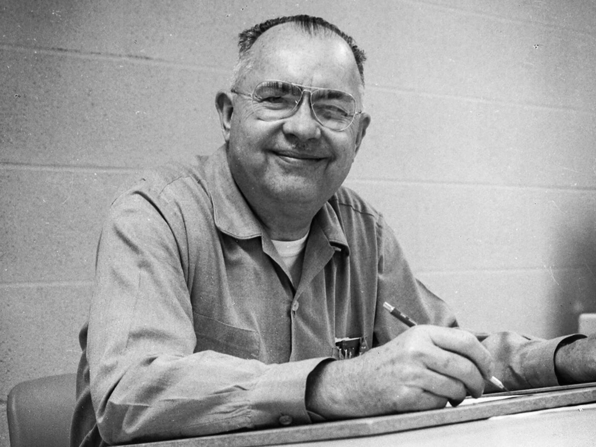

Fender Musical Instruments Corporation, inicialmente llamada Fender Electric Instrument Manufacturing Company, fue fundada por Leo Fender en la década de 1940, siendo una de las empresas fabricantes de guitarras y bajos eléctricos más conocidas y vendidas en la historia. Fender es particularmente conocida por llevar las guitarras eléctricas de cuerpo macizo a las masas. Fender creó la primera guitarra eléctrica de cuerpo sólido de venta masiva, la Telecaster (originalmente llamada 'Broadcaster'; 'Esquire' es el modelo original con una sola pastilla), el primer bajo de producción masiva, el Precision Bass o 'P-Bass', y la mundialmente conocida Stratocaster o Strat. Otras compañías y lutieres fabricaban guitarras eléctricas, pero todas eran de cuerpo hueco o guitarras especiales, como la Lap Steel hawaiana de Rickenbacker. Otros modelos conocidos de Fender son las guitarras Mustang, Jazzmaster, Jaguar, Musicmaster y Duo-Sonic y los bajos Jazz Bass, Precision, Mustang Bass y Bajo Telecaster, una línea de lap steels y el famoso piano eléctrico Fender Rhodes. Además de esto, también fabrica amplificadores de guitarra como el Twin Reverb o el Jazz Junior. Su jefatura está en Scottsdale, Arizona, y posee instalaciones en Corona (California), Japón, Ensenada, México y Corea.
Comienzos
La compañía comenzó con el nombre de 'Fender's Radio Service' en 1938, en Fullerton, California. Como técnico calificado en electrónica, Leo Fender era contratado no solo para reparar radios, sino también fonolas, sistemas de audio particulares y amplificadores. Como fruto de su trabajo, Fender se intrigó por los pequeños fallos en los amplificadores de esa época y comenzó a construir sus propios modelos y a modificar los ya existentes. A comienzos de la década de 1940 se unió a otro entusiasta de la electrónica, Clayton Orr Kauffman, creando una compañía llamada 'K y F Manufacturing Corp.' para diseñar, fabricar y vender sus propios instrumentos musicales y amplificadores. La producción comenzó en 1945, construyendo guitarras Lap Steel hawaianas (con un modelo de pastilla patentada) y amplificadores. Antes de fin de año Fender se convenció de que era más provechoso fabricar que reparar guitarras eléctricas, y se dedicó completamente a esta labor. Kauffman no se mostraba muy convencido de esta decisión y a comienzos de 1946 ambos decidieron amistosamente seguir sus respectivos caminos. Leo decidió entonces renombrar a la empresa 'Fender Electric Instrument Company'. La tienda de reparación siguió abierta hasta 1951, aunque Fender no atendía personalmente desde 1947.

Actualidad
En 1985, por iniciativa de un empleado de la fábrica, Fender Electric Instrument Manufacturing Company fue comprada a la CBS por sus propios trabajadores y renombrada como 'Fender Musical Instrument Corporation'. La Fender Musical Instruments Corporation ha continuado creciendo, agregando nuevos productos a su catálogo y conservando los diseños originales de los comienzos de la compañía. En 1987 abrieron una nueva fábrica en la ciudad de Ensenada Baja California Norte, México, debido al favorable clima y la mano de obra de alta calidad a bajo costo. Fender fabrica sus modelos de más alta calidad en Estados Unidos, México y Japón, pero también tiene extensas instalaciones de fabricación en China e Indonesia para los modelos de menor calidad, de tal manera que hoy en día se puede comprar una Fender Stratocaster al mismo precio en dólares que en el año de 1954. Los modelos más antiguos y los construidos en Estados Unidos son los más buscados, pero los japoneses también son muy apreciados. Debido a esto, las Fender construidas en Ensenada, México, reemplazan en el mercado americano a las japonesas y las Fender construidas en Japón se distribuyen únicamente dentro de este país, siendo muy pocas exportadas. La marca Squier (una fábrica de cuerdas comprada por Fender) se encarga de las guitarras de estudio desde la década de 1980. El nombre reúne a las guitarras de menor precio, con diseños originales de Fender, pero de construcción más barata. Estos modelos de menor coste son fabricados en China e Indonesia, pero eran originalmente fabricadas en Corea y Japón. Los antiguos modelos japoneses de Fender y Squier Stratocaster son muy apreciados y se venden en el mercado de los usados como JV o 'Japanese Vintage'.La base de su línea de instrumentos, conformada por la Tele, la Strat, el P-Bass y el J-Bass, permanece sin cambios con respecto a los modelos de la década de 1950. En cualquier género musical, ya sea rock, pop, blues o country, es muy probable que se vea una guitarra o bajo Fender amplificado por un amplificador de la misma marca. Las guitarras Fender son o han sido utilizadas por un gran número de artistas conocidos, entre los que destacan Buddy Holly, Jimi Hendrix, Ritchie Blackmore, Keith Richards, David Gilmour, Eric Clapton, George Harrison, Paul Mccartney, Jimmy Page, Jeff Beck, John Lennon, Pete Townshend, Stevie Ray Vaughan, Yngwie Malmsteen, Deryck Whibley, John Frusciante o Kurt Cobain, entre otros.Asimismo, Fender fabrica guitarras acústicas y guitarras electroacústicas como las Stratacoustic y Telecoustic, basadas en sus diseños clásicos Stratocaster y Telecaster respectivamente, usando nuevos materiales como la fibra de carbono. Además lanzó reediciones de pedales de efectos fabricados entre la década de 1960 y 1970, impulsados por la alta demanda que los modelos originales tenían y la dificultad para conseguirlos debido a su rareza. También ha comprado distintas empresas de guitarras como Gretsch, Guild, Hamer, Jackson, Charvel, Tacoma y otras marcas como la SWR de amplificadores para bajos.